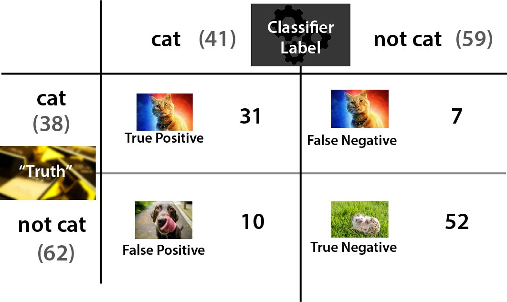
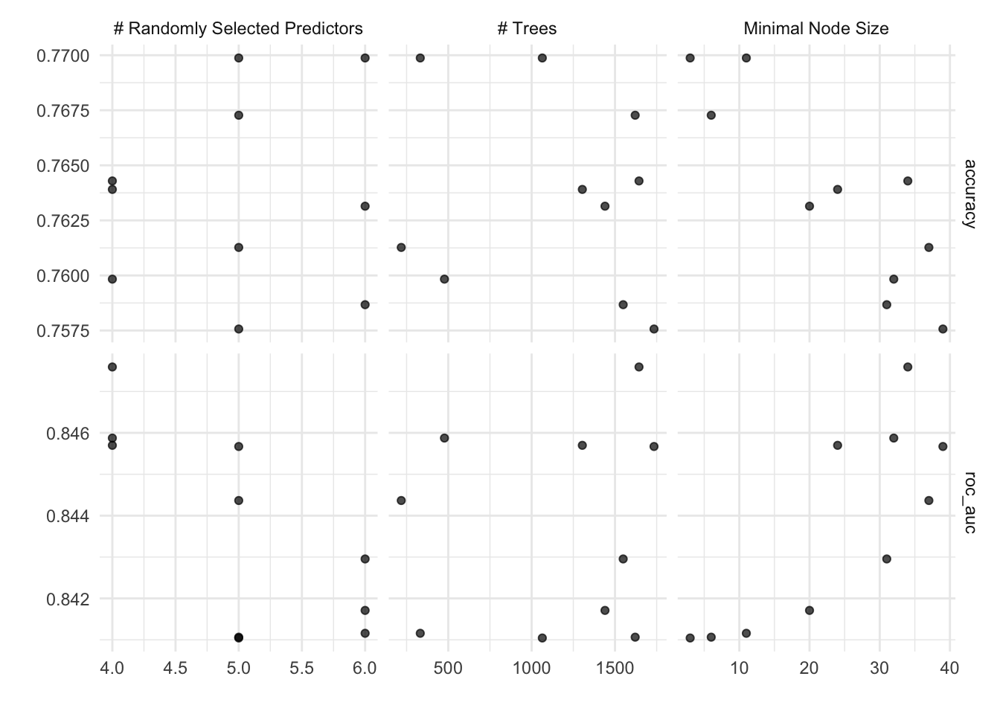

library(tidyverse)
library(tidymodels)
library(workflows)
library(tune)
library(vip)
library(ParallelLogger)
library(doParallel)
library(workflowsets)
library(qs)
library(ranger)
library(glmnet)
theme_set(theme_minimal())
diabetes_rec <- qread("../_models/diabetes_rec.qs")
diabetes_folds <- qread("../_models/diabetes_folds.qs")
d_na_train <- qread("../_models/d_na_train.qs")
d_na_test <- qread("../_models/d_na_test.qs")
diabetes_split <- qread("../_models/diabetes_split.qs")
Learning objective:
- Build a ML model for predicting whether a person has diabetes or not;
Exercise:
In this case study, you could make predictions about whether a patient will develop diabetes or not based on their medical and demographic variables. What kind of model will you build?
Solution
Unlike the first case study, when we built regression models to predict a numeric or continuous variable, in this case study we are going to build classification models, to predict the class: diabetes or no diabetes.
What is a classifier?
A classifier is some kind of rule / black box / widget that you can feed a new example and it will spit out whether or not it is part of a given class. E.g. below, we are classifying the animals to be either cat or not cat.

You can have classifiers for anything you can have a yes/no answer to, e.g.
- Is this a cat? üê±
- Do these test results indicate cancer? üöë
- Is this email spam or not spam? üìß
You can also have classifiers that categorise things into multiple (more than two) categories e.g.
- Which animal is this, out of the 12 animals I have trained my model on? üê±
- Do these test results indicate {none, stage 1, stage 2, stage 3, stage 4} cancer? üöë
- Is this email important, not important but not spam, or spam? üìß
It is clear that in some of these examples we are more concerned with being wrong in one direction than the other, e.g. it’s better to let some spam email through accidentally than to block all of it but also junk important emails from people you know. Likewise, we would prefer our medical tests to err on the side of caution and not give a negative test result to someone who needs treatment. So we will need to adjust a parameter to decide how much we want to trade this off.
Model evaluation (classification)
For now, let’s imagine we have a classifier already. How can we test it to see how good it is? A good start is a confusion matrix - a table of what test data it labels correctly and incorrectly.

Confusion Matrix
When applying classification models, we often use a confusion matrix to evaluate certain performance measures. A confusion matrix is a matrix that compares “the truth” to the labels generated by your classifier. When we label a cat correctly, we refer to this as a true positive. When we fail to label a cat as a cat, this is called a false negative. However, if we label something which is not a cat as a cat, this is called a false positive; and if we correctly label something which is not a cat, as not a cat, then this is a true negative. In our case, the confusion matrix will look like this:
- true positive (TP) : Diabetic correctly identified as diabetic
- true negative (TN) : Healthy correctly identified as healthy
- false positive (FP) : Healthy incorrectly identified as diabetic
- false negative (FN) : Diabetic incorrectly identified as healthy
Some common classification metrics
Don’t worry if you forget some of these - there are so many different words used to describe different ways to divide up the confusion matrix, it can get very confusing. I swear each time I just look up wikipedia again to figure out which part of the confusion matrix to look at. There are even more there that we won’t even bother talking about here.
Accuracy:
How often does the classifier label examples correctly?
\[\frac{TP+TN}{TP+TN+FP+FN} = \frac{\text{Correctly labelled examples}}{\text{All examples}}\]
Precision:
What fraction of things labelled as a cat were actually cats?
\[\frac{TP}{TP+FP} = \frac{\text{Correctly labelled cats}}{\text{All things labelled as cats}}\]
Sensitivity / Recall:
How often does the classifier label a cat as a cat?
\[\frac{TP}{TP+FN} = \frac{\text{Correctly labelled cats}}{\text{All true cats}}\]
Specificity:
How often does it label a not-cat as a not-cat?
\[\frac{TN}{TN+FP} = \frac{\text{Correctly labelled not-cats}}{\text{All true not-cats}}\]
F1-score:
This is a commonly used overall measure of classifier performance (but not the only one and not always the best depending upon the problem). It is defined as the harmonic mean of precision and sensitivity;
\[\frac{1}{F_1} = \frac{1}{2}\left(\frac{1}{\text{Precision}}+\frac{1}{\text{Sensitivity}}\right)\]
AUC: Area under the curve
A good classifier will have high precision and high specificity, minimizing both false positives and false negatives. In practice, and with an imperfect classifier, you can tune a knob to say which of those two you care more about. There will be some kind of a trade-off between the two.
To capture this balance, we often use a Reciever Operator Characteristic (ROC) curve that plots the false positive rate along the x-axis and the true positive rate along the y-axis, for all possible trade-offs. A line that is diagonal from the lower left corner to the upper right corner represents a random guess at labelling each example. The higher the line is in the upper left-hand corner, the better the classifier in general. AUC computes the area under this curve. For a perfect classifier, AUC = 1, for a random guess, AUC=0.5. Objective: maximize.

For additional discussion of classification error metrics, see Tharwat 2018, for example.
Challenge 7
- In the case of patients with a rare disease, what can be the problem of using accuracy to evaluate the performance of a machine learning model.
Solution
Accuracy is calculated as the (TP + TN)/(total) number of cases in the dataset. If you have very few positive cases, such as when working with a rare disease, the numerator of this fraction will be dominated by the true negatives you accurately predict in your dataset - so not very informative when assessing whether your classifier predicts the disease well at all!
Some classification models
Tree-based models
A tree-based model is a type of algorithm that creates a tree-like structure to make predictions about a certain outcome, such as whether a customer will buy a product or not. The tree structure consists of nodes that represent different features, and the algorithm uses these features to split the data into smaller and smaller subsets. Each subset is then assigned a label based on the majority of its observations, and this process continues until the algorithm reaches a stopping criterion or has created a fully-grown tree. Once the tree is created, it can be used to make predictions by following the path through the tree that corresponds to a given set of input features. Tree-based models are simple and intuitive to understand, and can be used for both classification and regression tasks.
Decision trees are a simple type of tree-based model that use a hierarchical structure of nodes to make predictions about a certain outcome. The process continues until a stopping criterion is met, such as a maximum tree depth or a minimum number of observations per leaf node, and it can predict the outcome. A single decision tree may not be accurate enough for many real-world problems;
Random forest overcomes this limitation by building many decision trees, each using a randomly selected subset of the data and features, and then combining their predictions to make a final prediction.
Logistic regression
Logistic regression is a type of regression where the range of mapping is confined to [0,1], unlike simple linear regression models where the domain and range could take any real value. Logistic regression is a type of algorithm that is used to predict a binary outcome, such as whether a patient is likely to develop diabetes or no. It works by creating a mathematical function that predicts the probability of an observation belonging to a certain class (e.g., diabetes or not diabetes). The function takes into account one or more input variables, such as the patients’s age, gender, or body mass index. The output of the function is a value between 0 and 1, which represents the probability of the observation belonging to the positive class (e.g., developing diabetes). To make a prediction, the algorithm compares the predicted probability to a threshold value (e.g., 0.5), and assigns the observation to the positive class if the probability is greater than the threshold, and to the negative class otherwise. The scatter plot of this data looks something like this:  We see that the data points are in the two extreme clusters. For our prediction modeling, a naive regression line in this scenario will give a nonsense fit (red line on the right plot) and what we actually require to fit is a line (blue on the right plot) to explain (or to correctly separate) a maximum number of data points. Logistic regression is a scheme to search this most optimum blue line.
We see that the data points are in the two extreme clusters. For our prediction modeling, a naive regression line in this scenario will give a nonsense fit (red line on the right plot) and what we actually require to fit is a line (blue on the right plot) to explain (or to correctly separate) a maximum number of data points. Logistic regression is a scheme to search this most optimum blue line.
Regularization is a technique that can be used to prevent overfitting of the model. A regularized logistic regression model, is a logistic classifier that has been modified to include a regularization term. This is done by adding a penalty to the model that discourages it from giving too much importance to any variable.
There are several regularized regression models, defined with the mixture parameter:
- Ridge regularization encourages the model to have small coefficient values (
mixture = 0); - Lasso regularization encourages the model to set some of the coefficients to zero, which performs feature selection. This can help improve the model’s interpretability and reduce the impact of irrelevant features on the model’s performance (
mixture = 1); - Elastic Net regularization combines Ridge and Lasso regularization by adding a penalty term that is a weighted average of both penalties. This approach can provide the benefits of both Ridge and Lasso regularization, such as feature selection and coefficient shrinkage (
mixturebetween 0 and 1).
Tune model hyperparameters
Some model parameters cannot be learned directly from a dataset during model training; these kinds of parameters are called hyperparameters. Some examples of hyperparameters include the number of randomly selected variables to be considered at each split in a tree-based model (called mtry in tidymodels).
Instead of learning these kinds of hyperparameters during model training, we can estimate the best values for these parameters by training many models on a resampled data set (like the cross-validation folds we have previously created) and measuring how well all these models perform. This process is called tuning.
Challenge 8:
Are these tuning hyperparameters?
- The random seed;
- Regularization strength in a linear regression model;
- Threshold for minimum number of samples required to split an internal node in a decision tree.
Solution
2 and 3 are parameters that directly affect the performance of a machine learning model during the training process.
You can identify which parameters to tune() in a model specification.
We can specify a random forest classifier with the following hyperparameters:
- mtry: the number of predictors that will be randomly sampled at each split when creating the tree models;
- trees: the number of decision trees to fit and ultimately average;
- min_n: The minimum number of data points in a node that are required for the node to be split further.
To specify a random forest model with tidymodels, we need the rand_forest() function. The hyperparameters of the model are arguments within the rand_forest() function and may be set to specific values. However, if tuning is required, then each of these parameters must be set to tune().
We will be using the ranger engine. This engine has an optional importance argument which can be used to track variable importance measures. In order to make a variable importance plot with vip(), we must add importance = 'impurity' inside our set_engine() function:
rf_model_diabetes <-
# specify that the model is a random forest and which hyperparameters need to be tuned
rand_forest(mtry = tune(),
trees = tune(),
min_n = tune()) %>%
# select the engine/package that underlies the model
set_engine("ranger", importance = "impurity") %>% #get variable importance scores
# choose either the continuous regression or binary classification mode
set_mode("classification")
rlr_model_diabetes <-
logistic_reg(mixture = tune(), penalty = tune()) %>%
set_engine("glmnet") %>%
set_mode("classification")Note Nothing about this model specification is specific to the diabetes dataset.
Find which parameters will give the model its best accuracy
- Try different values and measure their performance;
- Find good values for these parameters;
- Once the value(s) of the parameter(s) are determined, a model can be finalized by fitting the model to the entire training set.
You have a couple of options for how to choose which possible values for the tuning parameters to try. One of these options is creating a random grid of values. Random grid search is implemented with the grid_random() function in tidymodels, taking a sequence of hyperparameter names to create the grid. It also has a size parameter that specifies the number of random combinations to create.
The mtry() hyperparameter requires a pre-set range of values to test since it cannot exceed the number of columns in our data. When we add this to grid_random() we can pass mtry() into the range_set() function and set a range for the hyperparameter with a numeric vector.
In the code below, we set the range from 3 to 6. This is because we have 9 columns in diabetes_data and we would like to test mtry() values somewhere in the middle between 1 and 9, trying to avoid values close to the ends.
When using grid_random(), it is suggested to use set.seed() for reproducibility.
We can then use the function tune_grid() to tune either a workflow or a model specification with a set of resampled data, such as the cross-validation we created. Grid search, combined with resampling, requires fitting a lot of models! These models don’t depend on one another and can be run in parallel.
set.seed(314)
rf_grid <- grid_random(mtry() %>% range_set(c(3, 6)),
trees(),
min_n(),
size = 10)
#View grid
rf_grid# A tibble: 10 × 3
mtry trees min_n
<int> <int> <int>
1 4 1644 34
2 6 1440 20
3 6 1549 31
4 5 1734 39
5 6 332 11
6 5 1064 3
7 5 218 37
8 4 1304 24
9 4 477 32
10 5 1621 6#Tune random forest model
rf_tune_model <- tune_grid(
rf_model_diabetes, #your model
diabetes_rec, #your recipe
resamples = diabetes_folds, #your resampling
grid = rf_grid)
rf_tune_model# Tuning results
# 10-fold cross-validation repeated 5 times using stratification
# A tibble: 50 × 5
splits id id2 .metrics .notes
<list> <chr> <chr> <list> <list>
1 <split [483/54]> Repeat1 Fold01 <tibble [20 × 7]> <tibble [0 × 3]>
2 <split [483/54]> Repeat1 Fold02 <tibble [20 × 7]> <tibble [0 × 3]>
3 <split [483/54]> Repeat1 Fold03 <tibble [20 × 7]> <tibble [0 × 3]>
4 <split [483/54]> Repeat1 Fold04 <tibble [20 × 7]> <tibble [0 × 3]>
5 <split [483/54]> Repeat1 Fold05 <tibble [20 × 7]> <tibble [0 × 3]>
6 <split [483/54]> Repeat1 Fold06 <tibble [20 × 7]> <tibble [0 × 3]>
7 <split [483/54]> Repeat1 Fold07 <tibble [20 × 7]> <tibble [0 × 3]>
8 <split [484/53]> Repeat1 Fold08 <tibble [20 × 7]> <tibble [0 × 3]>
9 <split [484/53]> Repeat1 Fold09 <tibble [20 × 7]> <tibble [0 × 3]>
10 <split [484/53]> Repeat1 Fold10 <tibble [20 × 7]> <tibble [0 × 3]>
# … with 40 more rowsUse collect_metrics to extract the metrics calculated from the cross-validation performance across the different values of the parameters:
#collect metrics
rf_tune_model %>%
collect_metrics()# A tibble: 40 × 9
mtry trees min_n .metric .estimator mean n std_err .config
<int> <int> <int> <chr> <chr> <dbl> <int> <dbl> <chr>
1 4 1644 34 accuracy binary 0.767 50 0.00758 Preprocessor1_M…
2 4 1644 34 roc_auc binary 0.848 50 0.00633 Preprocessor1_M…
3 4 1644 34 sensitivity binary 0.863 50 0.00834 Preprocessor1_M…
4 4 1644 34 specificity binary 0.586 50 0.0154 Preprocessor1_M…
5 6 1440 20 accuracy binary 0.760 50 0.00779 Preprocessor1_M…
6 6 1440 20 roc_auc binary 0.843 50 0.00640 Preprocessor1_M…
7 6 1440 20 sensitivity binary 0.856 50 0.00832 Preprocessor1_M…
8 6 1440 20 specificity binary 0.579 50 0.0156 Preprocessor1_M…
9 6 1549 31 accuracy binary 0.762 50 0.00772 Preprocessor1_M…
10 6 1549 31 roc_auc binary 0.845 50 0.00643 Preprocessor1_M…
# … with 30 more rows#see which model performed the best, in terms of some given metric
rf_tune_model %>%
show_best("roc_auc")# A tibble: 5 × 9
mtry trees min_n .metric .estimator mean n std_err .config
<int> <int> <int> <chr> <chr> <dbl> <int> <dbl> <chr>
1 4 477 32 roc_auc binary 0.848 50 0.00631 Preprocessor1_Model09
2 4 1644 34 roc_auc binary 0.848 50 0.00633 Preprocessor1_Model01
3 4 1304 24 roc_auc binary 0.848 50 0.00636 Preprocessor1_Model08
4 5 218 37 roc_auc binary 0.846 50 0.00640 Preprocessor1_Model07
5 5 1734 39 roc_auc binary 0.845 50 0.00640 Preprocessor1_Model04
Challenge 9
Use tune_grid and collect_metrics to tune a workflow. Hints:
Use workflow() to define the workflow:
#set the workflow
#add the recipe
#add the model
Solution
#set the workflow
rf_workflow <- workflow() %>%
#add the recipe
add_recipe(diabetes_rec) %>%
#add the model
add_model(rf_model_diabetes)
#tune the workflow
set.seed(22)
rf_tune_wf <- rf_workflow %>%
tune_grid(resamples = diabetes_folds,
grid = rf_grid)
rf_tune_wf %>%
collect_metrics()# A tibble: 20 × 9
mtry trees min_n .metric .estimator mean n std_err .config
<int> <int> <int> <chr> <chr> <dbl> <int> <dbl> <chr>
1 4 1644 34 accuracy binary 0.766 50 0.00787 Preprocessor1_Mode…
2 4 1644 34 roc_auc binary 0.848 50 0.00628 Preprocessor1_Mode…
3 6 1440 20 accuracy binary 0.763 50 0.00734 Preprocessor1_Mode…
4 6 1440 20 roc_auc binary 0.845 50 0.00642 Preprocessor1_Mode…
5 6 1549 31 accuracy binary 0.763 50 0.00758 Preprocessor1_Mode…
6 6 1549 31 roc_auc binary 0.844 50 0.00646 Preprocessor1_Mode…
7 5 1734 39 accuracy binary 0.765 50 0.00842 Preprocessor1_Mode…
8 5 1734 39 roc_auc binary 0.846 50 0.00635 Preprocessor1_Mode…
9 6 332 11 accuracy binary 0.762 50 0.00736 Preprocessor1_Mode…
10 6 332 11 roc_auc binary 0.842 50 0.00629 Preprocessor1_Mode…
11 5 1064 3 accuracy binary 0.763 50 0.00706 Preprocessor1_Mode…
12 5 1064 3 roc_auc binary 0.844 50 0.00617 Preprocessor1_Mode…
13 5 218 37 accuracy binary 0.764 50 0.00771 Preprocessor1_Mode…
14 5 218 37 roc_auc binary 0.845 50 0.00637 Preprocessor1_Mode…
15 4 1304 24 accuracy binary 0.763 50 0.00722 Preprocessor1_Mode…
16 4 1304 24 roc_auc binary 0.848 50 0.00627 Preprocessor1_Mode…
17 4 477 32 accuracy binary 0.767 50 0.00800 Preprocessor1_Mode…
18 4 477 32 roc_auc binary 0.849 50 0.00635 Preprocessor1_Mode…
19 5 1621 6 accuracy binary 0.764 50 0.00717 Preprocessor1_Mode…
20 5 1621 6 roc_auc binary 0.843 50 0.00611 Preprocessor1_Mode…rf_tune_wf %>%
show_best("roc_auc")# A tibble: 5 × 9
mtry trees min_n .metric .estimator mean n std_err .config
<int> <int> <int> <chr> <chr> <dbl> <int> <dbl> <chr>
1 4 477 32 roc_auc binary 0.849 50 0.00635 Preprocessor1_Model09
2 4 1644 34 roc_auc binary 0.848 50 0.00628 Preprocessor1_Model01
3 4 1304 24 roc_auc binary 0.848 50 0.00627 Preprocessor1_Model08
4 5 1734 39 roc_auc binary 0.846 50 0.00635 Preprocessor1_Model04
5 5 218 37 roc_auc binary 0.845 50 0.00637 Preprocessor1_Model07Let’s visualise our results:
autoplot(rf_tune_model)
autoplot(rf_tune_wf)We can also specify the values of the parameters to tune with an tuning grid, entered as a data frame. It contains all the combinations of parameters to be tested. For regularized logistic regression, we test eleven values of mixture:
#set the grid
rlr_grid <- data.frame(mixture = seq(0, 1, 0.1),
penalty = seq(0, 1, 0.1))
rlr_grid mixture penalty
1 0.0 0.0
2 0.1 0.1
3 0.2 0.2
4 0.3 0.3
5 0.4 0.4
6 0.5 0.5
7 0.6 0.6
8 0.7 0.7
9 0.8 0.8
10 0.9 0.9
11 1.0 1.0set.seed(435)
##use tune_grid() for hyperparameters tuning, doing cross validation for each row of the tuning grid
rlr_tune_model <- tune_grid(
rlr_model_diabetes, #your model
diabetes_rec, #your recipe
resamples = diabetes_folds, #your resampling
grid = rlr_grid)
rlr_tune_model %>%
collect_metrics()# A tibble: 22 × 8
penalty mixture .metric .estimator mean n std_err .config
<dbl> <dbl> <chr> <chr> <dbl> <int> <dbl> <chr>
1 0 0 accuracy binary 0.750 50 0.00647 Preprocessor1_Model…
2 0 0 roc_auc binary 0.839 50 0.00718 Preprocessor1_Model…
3 0.1 0.1 accuracy binary 0.749 50 0.00596 Preprocessor1_Model…
4 0.1 0.1 roc_auc binary 0.838 50 0.00697 Preprocessor1_Model…
5 0.2 0.2 accuracy binary 0.750 50 0.00552 Preprocessor1_Model…
6 0.2 0.2 roc_auc binary 0.837 50 0.00696 Preprocessor1_Model…
7 0.3 0.3 accuracy binary 0.683 50 0.00376 Preprocessor1_Model…
8 0.3 0.3 roc_auc binary 0.807 50 0.00793 Preprocessor1_Model…
9 0.4 0.4 accuracy binary 0.652 50 0.000801 Preprocessor1_Model…
10 0.4 0.4 roc_auc binary 0.784 50 0.00843 Preprocessor1_Model…
# … with 12 more rowsrlr_tune_model %>%
show_best("roc_auc")# A tibble: 5 × 8
penalty mixture .metric .estimator mean n std_err .config
<dbl> <dbl> <chr> <chr> <dbl> <int> <dbl> <chr>
1 0 0 roc_auc binary 0.839 50 0.00718 Preprocessor1_Model01
2 0.1 0.1 roc_auc binary 0.838 50 0.00697 Preprocessor1_Model02
3 0.2 0.2 roc_auc binary 0.837 50 0.00696 Preprocessor1_Model03
4 0.3 0.3 roc_auc binary 0.807 50 0.00793 Preprocessor1_Model04
5 0.4 0.4 roc_auc binary 0.784 50 0.00843 Preprocessor1_Model05The workflowsets package
Tidymodels allows us to perform all of the above steps in a much faster way with the workflowsets package:
diabetes_wf_set <- workflow_set(list(diabetes_rec), #list of recipes
list(rf_model_diabetes, rlr_model_diabetes), #list of models
cross = TRUE) #all combinations of the preprocessors and models are used to create the workflows
diabetes_wf_set$option[[1]]
an empty container for options
[[2]]
an empty container for optionsdiabetes_wf_set <- diabetes_wf_set %>%
option_add(grid=rf_grid, id="recipe_rand_forest") %>%
option_add(grid=rlr_grid, id="recipe_logistic_reg")
diabetes_wf_set$option[[1]]
a list of options with names: 'grid'
[[2]]
a list of options with names: 'grid'diabetes_wf_set <- diabetes_wf_set %>%
workflow_map("tune_grid", # the first argument is a function name from the tune package (tune_grid(), fit_resamples()..)
resamples = diabetes_folds,
verbose = TRUE)
diabetes_wf_set# A workflow set/tibble: 2 × 4
wflow_id info option result
<chr> <list> <list> <list>
1 recipe_rand_forest <tibble [1 × 4]> <opts[2]> <tune[+]>
2 recipe_logistic_reg <tibble [1 × 4]> <opts[2]> <tune[+]>The results column contains the results of each call to tune_grid() for the workflows. From these results, we can get quick assessments of how well these models classified the data:
#To get the rankings of the models (and their tuning parameter sub-models) as a data frame:
rank_results(diabetes_wf_set, rank_metric = "roc_auc")# A tibble: 40 × 9
wflow_id .config .metric mean std_err n prepr…¹ model rank
<chr> <chr> <chr> <dbl> <dbl> <int> <chr> <chr> <int>
1 recipe_rand_forest Preproces… accura… 0.764 0.00684 50 recipe rand… 1
2 recipe_rand_forest Preproces… roc_auc 0.850 0.00608 50 recipe rand… 1
3 recipe_rand_forest Preproces… accura… 0.768 0.00657 50 recipe rand… 2
4 recipe_rand_forest Preproces… roc_auc 0.850 0.00618 50 recipe rand… 2
5 recipe_rand_forest Preproces… accura… 0.763 0.00669 50 recipe rand… 3
6 recipe_rand_forest Preproces… roc_auc 0.847 0.00628 50 recipe rand… 3
7 recipe_rand_forest Preproces… accura… 0.766 0.00776 50 recipe rand… 4
8 recipe_rand_forest Preproces… roc_auc 0.846 0.00642 50 recipe rand… 4
9 recipe_rand_forest Preproces… accura… 0.764 0.00701 50 recipe rand… 5
10 recipe_rand_forest Preproces… roc_auc 0.845 0.00639 50 recipe rand… 5
# … with 30 more rows, and abbreviated variable name ¹​preprocessor#plot the results
autoplot(diabetes_wf_set, metric = "roc_auc")
This shows the results for all tuning parameter combinations for each model. It looks like the random forest model did well. We can use the extract_workflow_set_result() function to extract the tuning results:
best_results <- diabetes_wf_set %>%
extract_workflow_set_result("recipe_rand_forest") %>%
select_best(metric="roc_auc")
best_results# A tibble: 1 × 4
mtry trees min_n .config
<int> <int> <int> <chr>
1 2 983 30 Preprocessor1_Model10Update and fit the workflow
The last step in hyperparameter tuning is to use finalize_workflow() to add our optimal model to our workflow object, and apply the last_fit() function to our workflow and our train/test split object. This will automatically train the model specified by the workflow using the training data, and produce evaluations based on the test set:
final_diabetes_fit <- diabetes_wf_set %>%
extract_workflow("recipe_rand_forest") %>%
finalize_workflow(best_results) %>%
last_fit(diabetes_split)
final_diabetes_fit# Resampling results
# Manual resampling
# A tibble: 1 × 6
splits id .metrics .notes .predictions .workflow
<list> <chr> <list> <list> <list> <list>
1 <split [537/231]> train/test split <tibble> <tibble> <tibble> <workflow>Since we supplied the train/test object when we fit the workflow, the metrics are evaluated on the test set. Now when we use the collect_metrics() function (the same we used when tuning our parameters) to extract the performance of the final model (since rf_fit_final now consists of a single final model) applied to the test set:
test_performance <- final_diabetes_fit %>% collect_metrics()
test_performance# A tibble: 2 × 4
.metric .estimator .estimate .config
<chr> <chr> <dbl> <chr>
1 accuracy binary 0.753 Preprocessor1_Model1
2 roc_auc binary 0.819 Preprocessor1_Model1We can plot the ROC curve to visualize test set performance of our random forest model, and generate a confusion matrix:
Note In R, factor levels are ordered alphabetically by default, which means that “no” comes first before “yes” and is considered the level of interest or positive case. Use the argument event_level = "second" to alter this as needed.
#ROC curve
collect_predictions(final_diabetes_fit) %>%
roc_curve(truth = diabetes, event_level="second", estimate = .pred_pos) %>% #specify which level of truth to consider as the "event"
autoplot()
#confusion matrix
conf_matrix_rf <- final_diabetes_fit %>%
collect_predictions() %>%
conf_mat(truth = diabetes, estimate = .pred_class)
conf_matrix_rf Truth
Prediction neg pos
neg 128 35
pos 22 46conf_matrix_rf %>%
autoplot()
Variable importance
In order to visualize the variable importance scores of our random forest model, we will need to manually train our workflow object with the fit() function on the training data, then extract the trained model with the pull_workflow_fit() function, and next passing the trained model to the vip() function:
#extract the final workflow
final_workflow <- diabetes_wf_set %>%
extract_workflow("recipe_rand_forest") %>%
finalize_workflow(best_results)
#fit on the training data
wf_fit <- final_workflow %>%
fit(data = d_na_train)
#extract the trained model
wf_fit <- wf_fit %>%
pull_workflow_fit()
#plot variable importance
vip(wf_fit)
This returns a ggplot object with the variable importance scores from our model.
We see from the results below, that the glucose concentration, body mass index and age are the most important predictors of diabetes.
Key Points
- A workflow is a combination of a model and preprocessors (e.g, a formula, recipe, etc.);
- In order to try different combinations of these, the
workflow_set()function creates an object that contains many workflows; - The
workflow_map()executes the function from the tune package (e.g,tune_grid(),fit_resamples()) across all the workflows in the set.